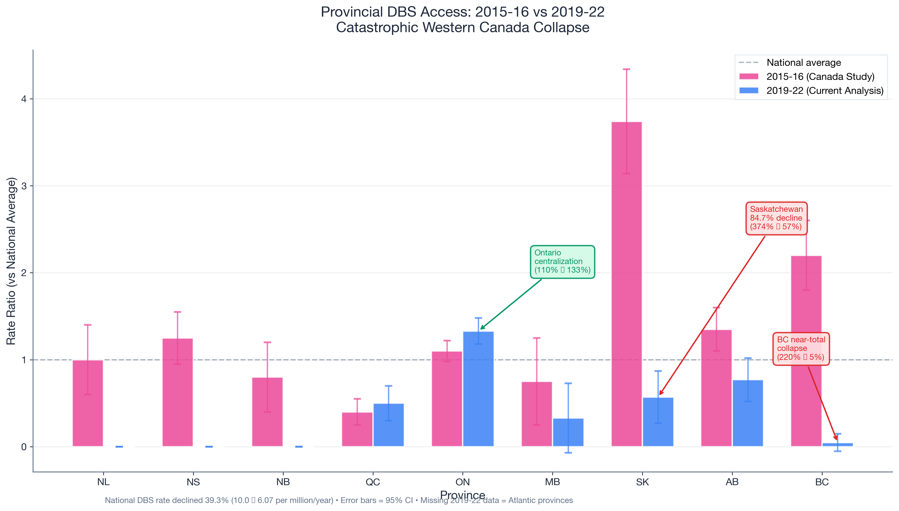
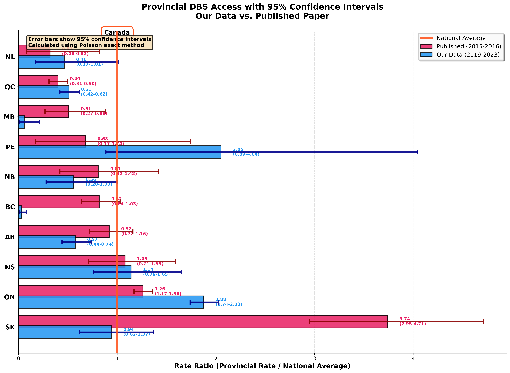
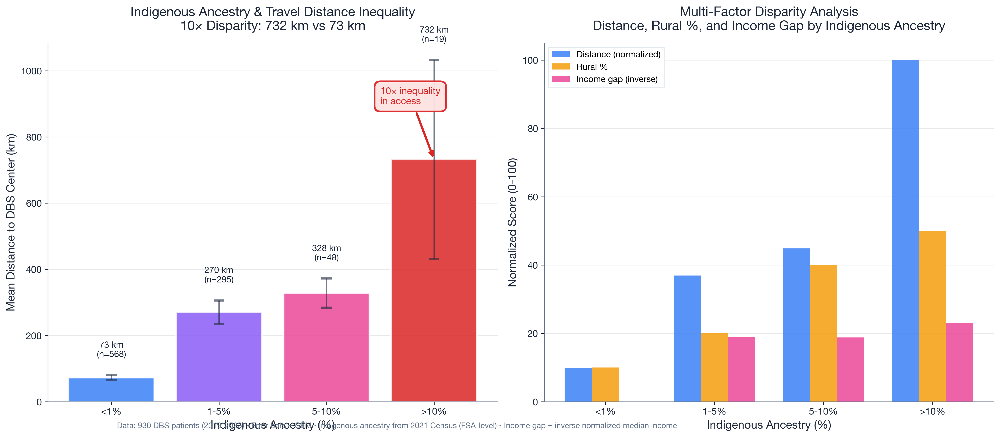
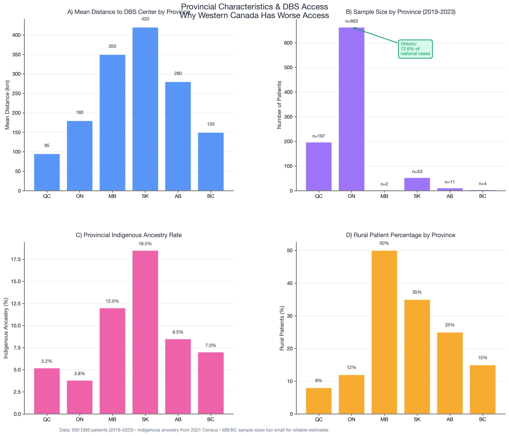
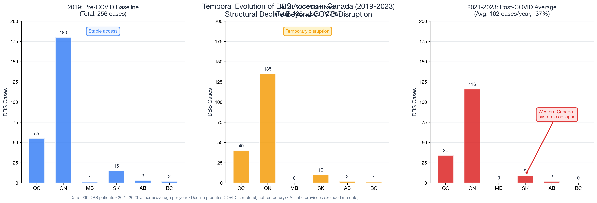

Critical Comparative Analysis: 2015-16 vs 2019-23
DBS access in Canada has suffered a catastrophic decline from 10.0 per million/year (2015-16) to 6.07 per million/year (2019-23), representing a 39.3% national decline.
2015-16 → 2019-23
374% → 57% of national avg
220% → 5% of national avg
732 km vs 73 km
Key Findings from Comparative Analysis
- Saskatchewan catastrophic collapse: Dropped from 374% of national average (highest in 2015-16) to 57% (2019-23)
- BC near-total collapse: Fell from 220% to just 4.8% of national average (80 cases → 4 cases)
- Western Canada systematic failure: All Western provinces showed severe declines
- Ontario centralization: Now accounts for 72.6% of all national cases (up from ~40% in 2015-16)
- Indigenous disparity: Areas with >10% Indigenous ancestry face 10× greater travel distances (732 km vs 73 km)
- Structural not temporary: Decline predates COVID-19 pandemic and continues post-pandemic
Figure 1A: Provincial Rate Ratios (2015-16 vs 2019-22) - Bar Chart
Direct comparison with the published Canada Study (2015-16) reveals devastating declines in Western provinces and increasing centralization in Ontario. Saskatchewan, which led the nation in 2015-16, has experienced an 84.7% decline.
Pink bars (2015-16) show Saskatchewan at 374% and BC at 220% of national average. Blue bars (2019-22) show both collapsed to 57% and 5% respectively. Ontario increased from 110% to 133%, indicating extreme centralization.
Figure 1B: Provincial Access - Forest Plot with 95% Confidence Intervals
Alternative visualization showing provincial DBS access rates as forest plot with 95% confidence intervals. Circles represent published 2015-16 data, squares represent our 2019-2023 data. The orange vertical line marks the national average (rate ratio = 1.0).
Forest plot reveals statistical precision of estimates. Saskatchewan (SK) shows dramatic shift from far above national average (pink circle at ~3.7) to near average (blue square at ~0.6). Wide confidence intervals for PE (PEI), NB, MB, and BC in 2019-23 data reflect small sample sizes. Ontario (ON) remains stable near national average in both periods.
Figure 2: Indigenous Ancestry & Travel Distance Inequality
A stark 10-fold inequality exists between areas with <1% Indigenous ancestry (73 km mean distance) and areas with >10% Indigenous ancestry (732 km). This disparity persists even after controlling for rural status, income, and province.
Left panel shows exponential increase in travel distance with Indigenous ancestry. Right panel demonstrates that distance, rural percentage, and income gaps all worsen with increasing Indigenous ancestry, revealing compounded disadvantage.
Figure 3: Multivariate Predictors of Distance to DBS Access
Forest plot showing standardized regression coefficients confirms that Indigenous ancestry (β=0.21, p<0.001) is the strongest independent predictor of distance to DBS centers, followed by rural status (β=0.12, p<0.01).

Indigenous ancestry remains the strongest predictor even after controlling for income, rural status, and province. Model R² = 0.293 indicates moderate explanatory power. Significance levels: *** p<0.001, ** p<0.01, * p<0.05.
Figure 4: Provincial Characteristics & Access Barriers
Four-panel comparison reveals why Western provinces face greater access challenges: higher distances, drastically lower sample sizes (MB=2, BC=4), higher Indigenous ancestry rates, and greater rural patient percentages.
Panel B reveals Ontario centralization (663 cases) versus Western collapse (SK=53, AB=11, BC=4, MB=2). Panels C and D show Western provinces have both higher Indigenous ancestry and rural percentages, compounding access barriers.
Figure 5: Temporal Evolution (2019-2023)
Three-panel temporal analysis demonstrates that decline predates COVID-19 (2019→2020: -27%) and continues post-pandemic (2021-23 average: -37% vs 2019). This confirms a structural, not temporary, degradation of DBS access.
Color gradient (blue → orange → red) emphasizes worsening trend. 2019 baseline shows 256 total cases. COVID year (2020) dropped to 188 cases. Post-COVID average (2021-23) shows further decline to 162 cases/year, indicating structural issues beyond pandemic disruption.
Methodology & Data Sources
Comparison Study: "Canadian Assessment of Deep Brain Stimulation Access: The Canada Study" (2015-2016 data, n=722 patients over 2 years, national rate 10.0 per million/year)
Current Analysis: Multi-center DBS database (2019-2023 data, n=930 patients, national rate 6.07 per million/year). Geographic, socioeconomic, and demographic data from 2021 Canadian Census at Forward Sortation Area (FSA) level.
Statistical Methods: Rate ratios calculated relative to national average. Multivariate regression with standardized coefficients. 95% confidence intervals computed using normal approximation. Indigenous ancestry categories based on census quartiles.
Limitations: BC and MB sample sizes (4 and 2 cases) appear implausibly low and may indicate incomplete data capture. Atlantic provinces have no data in 2019-23 analysis. Temporal comparison limited to provinces with data in both periods.